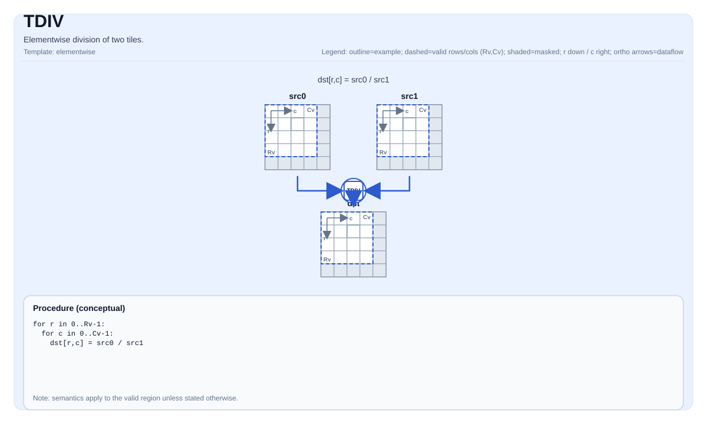

TDIV¶
Tile Operation Diagram¶

Introduction¶
Elementwise division of two tiles.
Math Interpretation¶
For each element (i, j) in the valid region:
\[ \mathrm{dst}_{i,j} = \frac{\mathrm{src0}_{i,j}}{\mathrm{src1}_{i,j}} \]
Assembly Syntax¶
PTO-AS form: see PTO-AS Specification.
Synchronous form:
%dst = tdiv %src0, %src1 : !pto.tile<...>
AS Level 1 (SSA)¶
%dst = pto.tdiv %src0, %src1 : (!pto.tile<...>, !pto.tile<...>) -> !pto.tile<...>
AS Level 2 (DPS)¶
pto.tdiv ins(%src0, %src1 : !pto.tile_buf<...>, !pto.tile_buf<...>) outs(%dst : !pto.tile_buf<...>)
C++ Intrinsic¶
Declared in include/pto/common/pto_instr.hpp:
template <auto PrecisionType = DivAlgorithm::DEFAULT, typename TileDataDst, typename TileDataSrc0,
typename TileDataSrc1, typename... WaitEvents>
PTO_INST RecordEvent TDIV(TileDataDst &dst, TileDataSrc0 &src0, TileDataSrc1 &src1, WaitEvents &... events);
PrecisionType has the following values available:
DivAlgorithm::DEFAULT: Normal algorithm, faster but with lower precision.DivAlgorithm::HIGH_PRECISION: High precision algorithm, but slower.
Constraints¶
- Implementation checks (A2A3):
TileData::DTypemust be one of:half,float.- Tile layout must be row-major (
TileData::isRowMajor). - Tile location must be vector (
TileData::Loc == TileType::Vec). - Static valid bounds:
TileData::ValidRow <= TileData::RowsandTileData::ValidCol <= TileData::Cols. - Runtime:
src0,src1anddsttiles should have the samevalidRow/validCol.
- Implementation checks (A5):
TileData::DTypemust be one of:int32_t,uint32_t,float,int16_t,uint16_t,half.- Tile layout must be row-major (
TileData::isRowMajor). - Tile location must be vector (
TileData::Loc == TileType::Vec). - Static valid bounds:
TileData::ValidRow <= TileData::RowsandTileData::ValidCol <= TileData::Cols. - Runtime:
src0,src1anddsttiles should have the samevalidRow/validCol.
- Valid region:
- The op uses
dst.GetValidRow()/dst.GetValidCol()as the iteration domain;.
- The op uses
- Division-by-zero:
- Behavior is target-defined.
- High Precision Algorithm
- Only available on A5,
PrecisionTypeoption is ignored on A3.
- Only available on A5,
Examples¶
Auto¶
#include <pto/pto-inst.hpp>
using namespace pto;
void example_auto() {
using TileT = Tile<TileType::Vec, float, 16, 16>;
TileT src0, src1, dst;
TDIV(dst, src0, src1);
}
Manual¶
#include <pto/pto-inst.hpp>
using namespace pto;
void example_manual() {
using TileT = Tile<TileType::Vec, float, 16, 16>;
TileT src0, src1, dst;
TASSIGN(src0, 0x1000);
TASSIGN(src1, 0x2000);
TASSIGN(dst, 0x3000);
TDIV(dst, src0, src1);
}
ASM Form Examples¶
Auto Mode¶
# Auto mode: compiler/runtime-managed placement and scheduling.
%dst = pto.tdiv %src0, %src1 : (!pto.tile<...>, !pto.tile<...>) -> !pto.tile<...>
Manual Mode¶
# Manual mode: bind resources explicitly before issuing the instruction.
# Optional for tile operands:
# pto.tassign %arg0, @tile(0x1000)
# pto.tassign %arg1, @tile(0x2000)
%dst = pto.tdiv %src0, %src1 : (!pto.tile<...>, !pto.tile<...>) -> !pto.tile<...>
PTO Assembly Form¶
%dst = tdiv %src0, %src1 : !pto.tile<...>
# AS Level 2 (DPS)
pto.tdiv ins(%src0, %src1 : !pto.tile_buf<...>, !pto.tile_buf<...>) outs(%dst : !pto.tile_buf<...>)